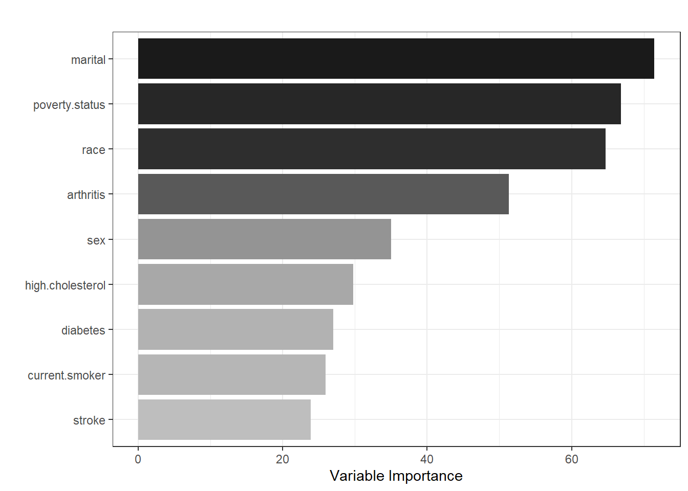

NHIS Example
The tutorial aims to guide the users through fitting machine learning (ML) techniques with health survey data. We will use the National Health Interview Survey (NHIS) 2016 dataset to develop prediction models for predicting high impact chronic pain (HICP) among adults aged 65 years or older. We will use LASSO and random forest models with sampling weights to obtain population-level predictions. In this tutorial, the split-sample approach as an internal validation technique will be used. You can review the earlier tutorial on data splitting technique. Note that this split-sample approach is flagged as a problematic approach in the literature (Steyerberg et al. 2001). The better approach could be cross-validation and bootstrapping Steyerberg and Steyerberg (2019). In the next tutorial, we will apply the ML techniques for survey data with cross-validation.
Steyerberg EW, Harrell Jr FE, Borsboom GJ, Eijkemans MJ, Vergouwe Y, Habbema JD. Internal validation of predictive models: efficiency of some procedures for logistic regression analysis. Journal of Clinical Epidemiology. 2001; 54(8):774-81. DOI: 10.1016/S0895-4356(01)00341-9
Steyerberg EW, Steyerberg EW. Overfitting and optimism in prediction models. Clinical prediction models: A practical approach to development, validation, and updating. 2019:95-112. DOI: 10.1007/978-3-030-16399-0_5
For those interested in the National Health Interview Survey (NHIS) dataset, can review the earlier tutorial about the dataset.
Load packages
We load several R packages required for fitting LASSO and random forest models.
Analytic dataset
Load
We load the dataset into the R environment and lists all available variables and objects.
The dataset contains 7,828 complete case participants (i.e., no missing) with 14 variables:
-
studyid: Unique identifier -
psu: Pseudo-PSU -
strata: Pseudo-stratum -
weight: Sampling weight -
HICP: HICP (high impact chronic pain, the binary outcome variable) -
sex: Sex -
marital: Marital status -
race: Race/ethnicity -
poverty.status: Poverty status -
diabetes: Diabetes -
high.cholesterol: High cholesterol -
stroke: Stroke -
arthritis: Arthritis and rheumatism -
current.smoker: Current smoker
Lets see the descriptive statistics of the predictors stratified by the outcome variable (HICP).
Descriptive statistics
# Predictors
predictors <- c("sex", "marital", "race", "poverty.status",
"diabetes", "high.cholesterol", "stroke",
"arthritis", "current.smoker")
# Table 1 - Unweighted
#tab1 <- CreateTableOne(vars = predictors, strata = "HICP",
# data = dat.analytic, test = F)
#print(tab1, showAllLevels = T)
tbl_summary(data = dat.analytic, include = predictors,
by = HICP, missing = "no") %>%
modify_spanning_header(c("stat_1", "stat_2") ~ "**HICP**")| Characteristic | HICP | |
|---|---|---|
| 0, N = 6,8471 | 1, N = 9811 | |
| sex | ||
| Female | 3,841 (56%) | 623 (64%) |
| Male | 3,006 (44%) | 358 (36%) |
| marital | ||
| Never married | 444 (6.5%) | 60 (6.1%) |
| Married/with partner | 3,183 (46%) | 379 (39%) |
| Divorced/separated | 1,252 (18%) | 198 (20%) |
| Widowed | 1,968 (29%) | 344 (35%) |
| race | ||
| White | 5,455 (80%) | 756 (77%) |
| Black | 606 (8.9%) | 99 (10%) |
| Hispanic | 431 (6.3%) | 79 (8.1%) |
| Others | 355 (5.2%) | 47 (4.8%) |
| poverty.status | ||
| <100% FPL | 543 (7.9%) | 176 (18%) |
| 100-200% FPL | 1,520 (22%) | 307 (31%) |
| 200-400% FPL | 2,309 (34%) | 309 (31%) |
| 400%+ FPL | 2,475 (36%) | 189 (19%) |
| diabetes | 1,275 (19%) | 315 (32%) |
| high.cholesterol | 3,602 (53%) | 633 (65%) |
| stroke | 527 (7.7%) | 146 (15%) |
| arthritis | 3,226 (47%) | 769 (78%) |
| current.smoker | 619 (9.0%) | 123 (13%) |
| 1 n (%) | ||
Weight normalization
Now, we will fit the LASSO model for predicting binary HICP with the listed predictors. Note that we are not interested in the statistical significance of the \(\beta\) coefficients. Hence, not utilizing PSU and strata should not be an issue in this prediction problem. However, we still need to use sampling weights to get population-level predictions. Large weights are usually problematic, particularly with model evaluation. One way to solve the problem is weight normalization (Bruin 2023).
# Normalize weight
dat.analytic$wgt <- dat.analytic$weight *
nrow(dat.analytic)/sum(dat.analytic$weight)
# Weight summary
summary(dat.analytic$weight)
#> Min. 1st Qu. Median Mean 3rd Qu. Max.
#> 243 1521 2604 2914 3791 14662
summary(dat.analytic$wgt)
#> Min. 1st Qu. Median Mean 3rd Qu. Max.
#> 0.08339 0.52198 0.89365 1.00000 1.30109 5.03175
# The weighted and unweighted n are equal
nrow(dat.analytic)
#> [1] 7828
sum(dat.analytic$wgt)
#> [1] 7828Split-sample
Let us create our training and test data using the split-sample approach. We created 70% training and 30% test data for our example.
set.seed(604001)
dat.analytic$datasplit <- rbinom(nrow(dat.analytic),
size = 1, prob = 0.7)
table(dat.analytic$datasplit)
#>
#> 0 1
#> 2343 5485
# Training data
dat.train <- dat.analytic[dat.analytic$datasplit == 1,]
dim(dat.train)
#> [1] 5485 16
# Test data
dat.test <- dat.analytic[dat.analytic$datasplit == 0,]
dim(dat.test)
#> [1] 2343 16Regression formula
Lets us define the regression formula:
LASSO for Surveys
Now, we will fit the LASSO model for our survey data. Here are the steps:
- We will fit 5-fold cross-validation on the training data to find the value of lambda that gives minimum prediction error. We will incorporate sampling weights in the model to account for survey data.
- Fit LASSO on the training with the optimum lambda from the previous step. Incorporate sampling weights in the model to account for survey data.
- Calculate predictive performance (e.g., AUC) on the test data.
Data in matrix
To perform LASSO with the glmnet package, we need to set the predictors in the data.matrix format and outcome variable as a vector.
Let us see the few rows of the data:
head(X.train)
#> sexMale maritalMarried/with partner maritalDivorced/separated maritalWidowed
#> 12 1 1 0 0
#> 13 1 0 1 0
#> 16 0 0 1 0
#> 42 0 0 0 1
#> 63 0 0 0 1
#> 65 0 0 0 1
#> raceBlack raceHispanic raceOthers poverty.status100-200% FPL
#> 12 0 0 0 0
#> 13 0 0 0 0
#> 16 1 0 0 0
#> 42 0 0 0 0
#> 63 0 0 0 0
#> 65 0 1 0 1
#> poverty.status200-400% FPL poverty.status400%+ FPL diabetesYes
#> 12 1 0 0
#> 13 0 1 0
#> 16 1 0 0
#> 42 0 1 0
#> 63 1 0 0
#> 65 0 0 1
#> high.cholesterolYes strokeYes arthritisYes current.smokerYes
#> 12 0 0 1 0
#> 13 0 0 1 0
#> 16 1 0 1 0
#> 42 1 0 0 0
#> 63 0 0 0 0
#> 65 1 0 1 0As we can see, factor predictors are coded into dummy variables. It is important to note that the continuous predictors should be standardized. glmnet does this by default. Next, we will use the glmnet function to fit the LASSO model.
In glmnet function, alpha = 1 for the LASSO, alpha = 0 for the ridge, and setting alpha to some value between 0 and 1 is the elastic net model.
Find best lambda
Now, we will use k-fold cross-validation with the cv.glmnet function to find the best lambda value. In this example, we choose k = 5. Note that we must incorporate sampling weight to account for survey data.
# Find the best lambda using 5-fold CV
fit.cv.lasso <- cv.glmnet(x = X.train, y = y.train,
nfolds = 5, alpha = 1,
family = "binomial",
weights = dat.train$wgt)
fit.cv.lasso
#>
#> Call: cv.glmnet(x = X.train, y = y.train, weights = dat.train$wgt, nfolds = 5, alpha = 1, family = "binomial")
#>
#> Measure: Binomial Deviance
#>
#> Lambda Index Measure SE Nonzero
#> min 0.001355 43 0.6856 0.01905 12
#> 1se 0.020128 14 0.7036 0.01446 5We can also plot all the lambda values against the deviance (i.e., prediction error).
The lambda value that has the lowest deviance is 0.0013555. Our next step is to fit the LASSO model with the best lambda. Again, we must incorporate sampling weight to account for survey data.
LASSO with best lambda
# Fit the model on the training set with optimum lambda
fit.lasso <- glmnet(x = X.train, y = y.train,
alpha = 1, family = "binomial",
lambda = fit.cv.lasso$lambda.min,
weights = dat.train$wgt)
fit.lasso
#>
#> Call: glmnet(x = X.train, y = y.train, family = "binomial", weights = dat.train$wgt, alpha = 1, lambda = fit.cv.lasso$lambda.min)
#>
#> Df %Dev Lambda
#> 1 12 9.68 0.001355Lets check the coefficients from the model:
# Intercept
fit.lasso$a0
#> s0
#> -2.491484
# Beta coefficients
fit.lasso$beta
#> 15 x 1 sparse Matrix of class "dgCMatrix"
#> s0
#> sexMale -0.009832818
#> maritalMarried/with partner .
#> maritalDivorced/separated .
#> maritalWidowed 0.041111308
#> raceBlack -0.064853067
#> raceHispanic -0.037985160
#> raceOthers .
#> poverty.status100-200% FPL -0.268494032
#> poverty.status200-400% FPL -0.602097419
#> poverty.status400%+ FPL -1.052635980
#> diabetesYes 0.369667918
#> high.cholesterolYes 0.299475863
#> strokeYes 0.449050679
#> arthritisYes 1.241288036
#> current.smokerYes 0.253439388As we can see, the coefficient is not shown for some predictors. This is because the LASSO model shrunk the coefficient to zero. In other words, these predictors were dropped entirely from the model because they were not contributing enough to predict the outcome. next, we will use the final model to make predictions on new observations or our test data.
Model performance
Now, we will calculate the model performance measures such as AUC, calibration slope, and Brier score Christodoulou et al. (2019). We will incorporate sampling weights to get population-level estimates.
Steyerberg EW, Vickers AJ, Cook NR, Gerds T, Gonen M, Obuchowski N, Pencina MJ, Kattan MW. Assessing the performance of prediction models: a framework for some traditional and novel measures. Epidemiology (Cambridge, Mass.). 2010;21(1):128. DOI: 10.1097/EDE.0b013e3181c30fb2
Steyerberg EW, Vergouwe Y. Towards better clinical prediction models: seven steps for development and an ABCD for validation. European heart journal. 2014;35(29):1925-31. DOI: 10.1093/eurheartj/ehu207
Christodoulou E, Ma J, Collins GS, Steyerberg EW, Verbakel JY, Van Calster B. A systematic review shows no performance benefit of machine learning over logistic regression for clinical prediction models. Journal of clinical epidemiology. 2019;110:12-22. DOI: 10.1016/j.jclinepi.2019.02.004
Area under the curve (AUC) is a measure of discrimination or accuracy of a model. A higher AUC is better. An AUC value of 1 is considered a perfect prediction, while an AUC value of 0.50 is no better than a coin toss. In practice, AUC values of 0.70 to 0.80 are considered good, and those \(>0.80\) are considered very good.
Calibration is defined as the agreement between observed and predicted probability of the outcome. In this exercise, we will estimate the calibration slope as a measure of calibration. A calibration slope of 1 reflects a well-calibrated model, a calibration slope less than 1 indicates overfitting and greater than 1 indicates underfitting of the model.
The Brier score is a measure of overall performance. The Brier score can range from 0 to 1 and is similar to the mean squared error. A lower Brier score value (closer to 0) indicates a better model.
Random Forest for Surveys
Now, we will fit the random forest model for predicting binary HICP with the listed predictors. Here are the steps for fitting the model:
- Fit random forest model on the training set to find the value of the hyperparameters (number of trees, number of predictors to split at in each node, and minimal node size to split at) that gives minimum prediction error. Incorporate sampling weights in the model to account for survey data.
- Grid-search with out-of-sample error approach is widely used in the literature. In this approach, we create a data frame from all combinations of the hyperparameters and check which combination gives the lowest out-of-sample error.
- Fit the random forest model on the training with the selected hyperparameters from the previous step. Incorporate sampling weights in the model to account for survey data.
- Calculate predictive performance (e.g., AUC) on the test data.
Formula
We will use the same formula defined above.
Hyperparameter tuning
For tuning the hyperparameters, lets use the grid search approach.
# Grid with 1000 models - huge time consuming
#grid.search <- expand.grid(mtry = 1:10, node.size = 1:10,
# num.trees = seq(50,500,50),
# oob_error = 0)
# Grid with 36 models as an exercise
grid.search <- expand.grid(mtry = 5:7, node.size = 1:3,
num.trees = seq(200,500,100),
oob_error = 0)
head(grid.search)Now, we will fit the random forest model with the selected grids. We will incorporate sampling weight as the case weight in the ranger function.
## Calculate prediction error for each grid
for(ii in 1:nrow(grid.search)) {
# Model on training set with grid
fit.rf.tune <- ranger(formula = Formula,
data = dat.train,
num.trees = grid.search$num.trees[ii],
mtry = grid.search$mtry[ii],
min.node.size = grid.search$node.size[ii],
importance = 'impurity',
case.weights = dat.train$wgt)
# Add Out-of-bag (OOB) error to each grid
grid.search$oob_error[ii] <- sqrt(fit.rf.tune$prediction.error)
}
head(grid.search)Lets check which combination of hyperparameters (number of trees, number of predictors to split at in each node, and minimal node size to split at) gives minimum prediction error.
Model after tuning
Now, we will fit the random forest model with the tuned hyperparameters.
# Fit the model on the training set
fit.rf <- ranger(formula = Formula,
data = dat.train,
case.weights = dat.train$wgt,
probability = T,
num.trees = grid.search$num.trees[position],
min.node.size = grid.search$node.size[position],
mtry = grid.search$mtry[position],
importance = 'impurity')
# Fitted random forest model
fit.rf
#> Ranger result
#>
#> Call:
#> ranger(formula = Formula, data = dat.train, case.weights = dat.train$wgt, probability = T, num.trees = grid.search$num.trees[position], min.node.size = grid.search$node.size[position], mtry = grid.search$mtry[position], importance = "impurity")
#>
#> Type: Probability estimation
#> Number of trees: 300
#> Sample size: 5485
#> Number of independent variables: 9
#> Mtry: 5
#> Target node size: 3
#> Variable importance mode: impurity
#> Splitrule: gini
#> OOB prediction error (Brier s.): 0.1110941Now, we can use the model to make predictions on our test data.
Model performance
The same as the LASSO model, we can calculate the AUC, calibration slope, and Brier score.
# Logit of the predicted probability
dat.test$pred.rf[dat.test$pred.rf == 0] <- 0.00001
dat.test$pred.rf.logit <- Logit(dat.test$pred.rf)
# Weighted calibration slope
mod.cal <- glm(HICP ~ pred.rf.logit,
data = dat.test,
family = binomial,
weights = wgt)
cal.slope.rf <- summary(mod.cal)$coef[2,1]
cal.slope.rf
#> [1] 0.4977901Variable importance
One nice feature of random forest is that we can rank the variables and generate a variable importance plot.
ggplot(
enframe(fit.rf$variable.importance,
name = "variable",
value = "importance"),
aes(x = reorder(variable, importance),
y = importance, fill = importance)) +
geom_bar(stat = "identity",
position = "dodge") +
coord_flip() +
ylab("Variable Importance") +
xlab("") +
ggtitle("") +
guides(fill = "none") +
scale_fill_gradient(low = "grey",
high = "grey10") +
theme_bw()
As per the figure, marital status, poverty status, sex, and arthritis are the most influential predictors in predicting HICP, while stroke is the least important predictor.
Performance comparison
| Model | AUC | Calibration slope | Brier score |
|---|---|---|---|
| LASSO | 0.7662941 | 1.2446448 | 0.0997855 |
| Random forest | 0.6941022 | 0.4977901 | 0.1095384 |